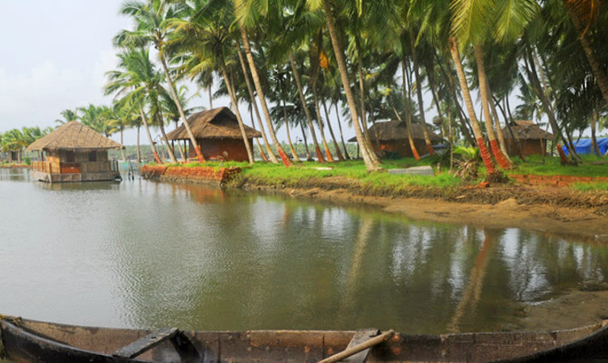

Places To Visit
Bakel Fort

The 300 years old defensive mechanism which is the largest and well-preserved fort makes it one of the best Kasaragod tourist place.
Cheruvathoor
Kuttamath Nagar legally is renowned for marking the origin of an extraordinary artist composing melodic shows and sonnets.
Mallikarjuna Temple

A temple dedicated to Lord Shiva is situated in the center of the Kasaragod city.The mesmerizing aura of this temple stops the passerby.
Popular Things To Do
Houseboat Cruise in Bakel from Manglore
Bekal houseboats and the wonderful tourism destinations in Kasargod helps you escape the chaos of daily life and dive into the untouched waterworld of North Kerala.
Trekking Through the Hills of Ranipuram
It is an offbeat trekking destination, which is sparsely populated and provides panoramic views as you walk across misty, lush green grasslands.It provides a virtual treat for the trekkers and the bird watchers.
Kayaking Experience in Nileshwaram
The Nileshwar Backwaters offer an authentic houseboat experience since they enjoy a raw natural environment. They have remained unexplored by most travelers.